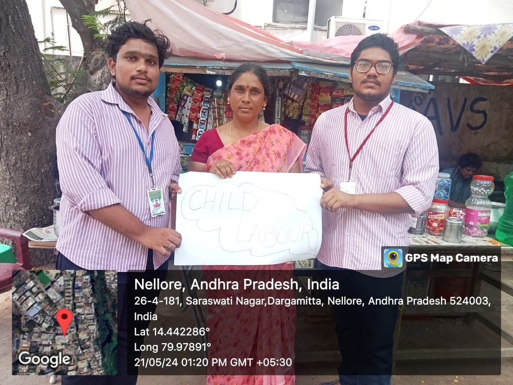
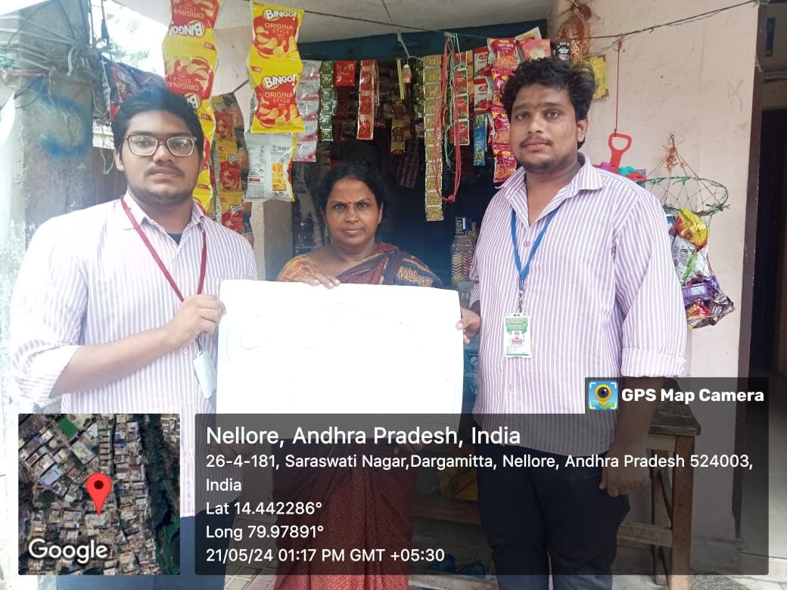
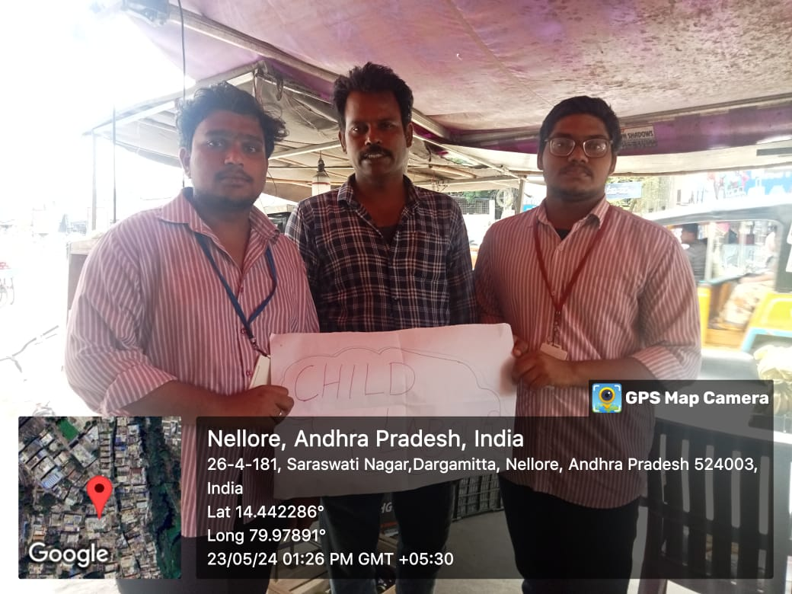
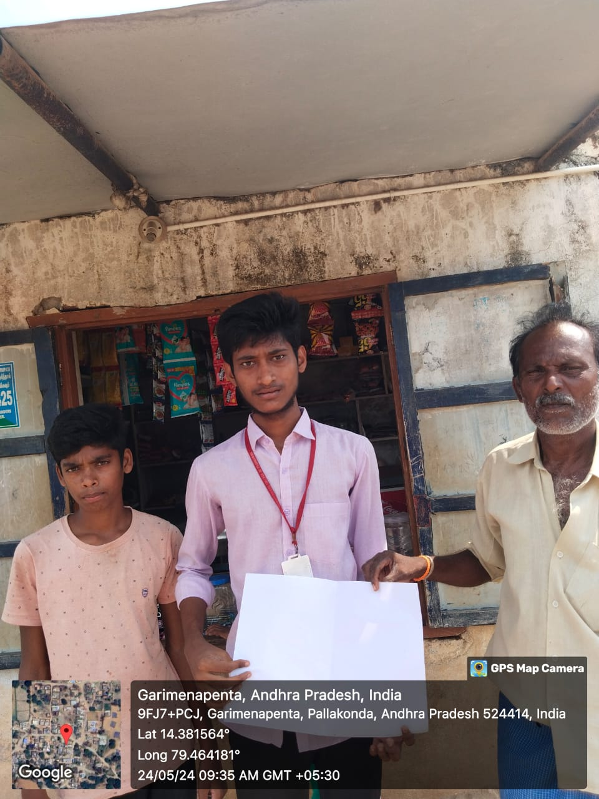

In the second week, we created awareness in provision stores and roadside shops, and taught about child labour and education.
Day 1: Continued our awareness program in the area and did the following:
Day 2: Conducted a survey on child labour in provision stores, revealing significant employment of children due to economic hardship, lack of education, and exploitation. We questioned people about child labour near them and their knowledge of child rights, gathering information.
Day 3: Created awareness among people in provision stores about child rights and freedom in society.
Day 4: Started a survey on roadside shops to identify children working in them as part of creating awareness among people.
Day 5: Created awareness among people in roadside shops about child rights and the importance of education for children.
Day 6: Explained the impacts of child labour and gathered information about children attending school and those not attending. Women shared their problems and conditions.
   